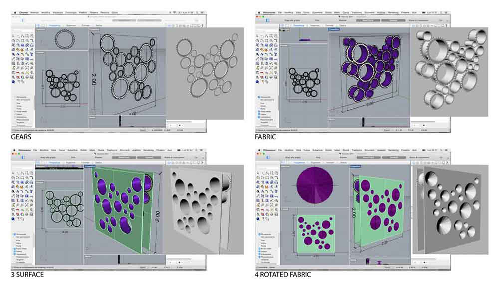

Week 2
Computer-Aided Design
DIAPHRAGM
ASSIGNMENT: model (draw, render, animate, simulate, ...) a possible final project, and post it on your class page.
computer_design/index.htmlDuring this second week I used Rhinoceros. With Rhino, I designed 2D and 3D models, because my goal is to learn Grasshopper for the parametric modeling.
As exercise I decided to shape the final project. However I wanted to end the academic year with a functioning prototype, and I will provide soon.
The project goal is a responsive wall. I started with a 2mx2m module. For the mechanism I was inspired to the gear of a bicycle.

I designed it composed of two panels: circular gears and cables are positioned on each panel, linked together and moved by a engine. The gears of a panel are connected to the other gears by a tissue, and rotate in opposite directions, locking the tissue.

It is an ordinary project for expert people, but for me it is an opportunity to understand the working of a system so far hard to accomplish.
Download:
2Dmodel.3dm3Dmodel.3dm